Self-Healing Systems Workshop
Viktor Farcic
@vfarcic
TechnologyConversations.com
CloudBees.com
Viktor Farcic


Continuous Deployment
- Provision
- Test
- Build
- Test
- Deploy
- Test
- Enable
- Test
Continuous Deployment
The Second Half
- Monitor
- React to problems
- Prevent problems
- Automated?
What Are We Trying to Accomplish?
Perfection?
- Applications that never fail?
- Services that can handle any load?
- Commits without bugs?
- Hardware that never breaks?
What Are We Trying to Accomplish?
There is no such thing as perfection
- Applications fail!
- Services that can NOT handle any load!
- Commits contain undetected bugs!
- Hardware breaks!
What Are We Trying to Accomplish?
Self-Replicating System
Life
- System over individuals
- Small and incremental evolutionary improvements
- Reproduction
- Self-healing
What Are We Trying to Accomplish?
Resilient System
Cells
- Restoring to the state of equilibrium
- Monitoring and adjusting processes
- Reproducing
- Healing
What Are We Trying to Accomplish?
Body Equivalent?
- Datacenter
- Orchestrator
- (micro)Services
- Containers
- Scaling
- Self-Healing?
Self-Healing System
- Discover problems
- Restore itself to the desired state
- Make decisions
- Adapt to changed conditions
Self-Healing System
Levels
- Application level
- System level
- Hardware level
Self-Healing System
Types
- Reactive healing
- Preventive healing
Tools
- Cluster orchestrator
- Realtime Registry
- Historical Registry
- Monitoring
- General orchestrator
Tools
Cluster Orchestrator

Tools
Realtime Registry
Tools
Historical Registry

Tools
Monitoring

Tools
General Orchestrator

Provisioning


Provisioning
Nodes
git clone https://github.com/vfarcic/ms-lifecycle.git
cd ms-lifecycle
vagrant plugin install vagrant-cachier
vagrant up cd swarm-master swarm-node-1 swarm-node-2Provisioning
Nodes
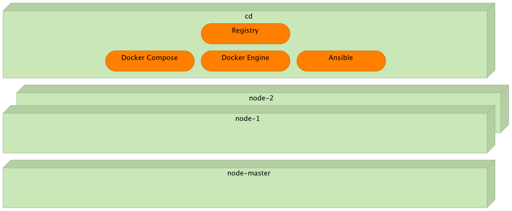Provisioning
Docker Swarm
vagrant ssh cd
cat /vagrant/ansible/swarm.yml
cat /vagrant/ansible/roles/docker/tasks/debian.yml
ansible-playbook /vagrant/ansible/swarm.yml \
-i /vagrant/ansible/hosts/prodProvisioning
Docker Swarm
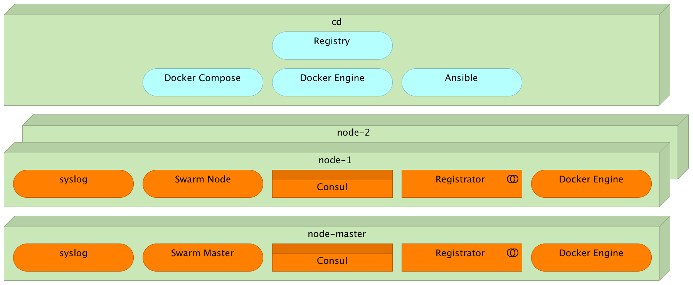Provisioning
Jenkins
cat /vagrant/ansible/jenkins-node-swarm.yml
cat /vagrant/ansible/jenkins.yml
ansible-playbook /vagrant/ansible/jenkins-node-swarm.yml \
-i /vagrant/ansible/hosts/prod
ansible-playbook /vagrant/ansible/jenkins.yml \
--extra-vars "main_job_src=service-healing-config.xml service_redeploy_src=service-redeploy-df-config.xml" \
-c localProvisioning
Jenkins

Prerequisite #1
Ability to deploy to any server inside a cluster that meets hardware requirements
Deployment
Cluster Orchestrator Tools


Deployment
The Code
git clone https://github.com/vfarcic/go-demo.git
cd go-demo
cat docker-compose-test.yml
docker-compose -f docker-compose-test.yml run --rm unit
ll
cat Dockerfile
docker build -t vfarcic/go-demo .
# docker push vfarcic/go-demo
Deployment
Run
docker-compose up -d db app
docker-compose ps
GO_DEMO_PORT=<PORT>
curl -i -XPUT localhost:$GO_DEMO_PORT/demo/hello
docker-compose down
docker-compose psDeployment
Run in cluster
export DOCKER_HOST=tcp://swarm-master:2375
docker ps -a --format "table {{.Names}}\t{{.Status}}"
docker info
docker-compose up -d db app
docker-compose ps
curl swarm-master:8500/v1/catalog/service/go-demo \
| jq '.'Deployment
Run
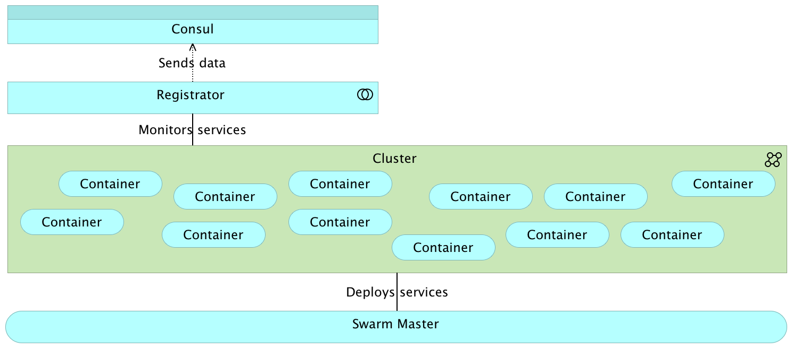Deployment
Proxy


Deployment
Proxy
curl -i localhost/demo/hello
sudo docker run -d \
--name docker-flow-proxy \
-e CONSUL_ADDRESS=10.100.192.200:8500 \
-p 80:80 -p 8081:8080 \
vfarcic/docker-flow-proxy
curl "localhost:8081/v1/docker-flow-proxy/reconfigure?serviceName=go-demo&servicePath=/demo" \
| jq '.'
curl -i localhost/demo/helloDeployment
Proxy: Operations
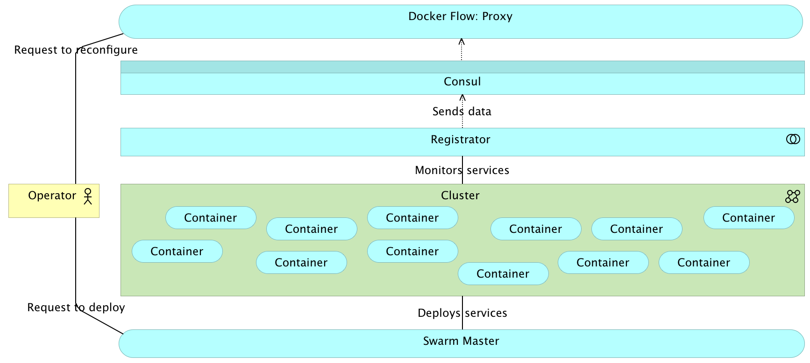Deployment
Proxy: User

Deployment
Scale
docker-compose ps
docker-compose scale app=3
docker-compose ps
curl "localhost:8081/v1/docker-flow-proxy/reconfigure?serviceName=go-demo&servicePath=/demo" \
| jq '.'
curl -i localhost/demo/hello # Repeat a few times
docker-compose logs app
docker-compose downDeployment
Scale With Limits
cat docker-compose-limits.yml
docker-compose -f docker-compose-limits.yml up -d db app-big
docker info
docker-compose -f docker-compose-limits.yml up -d db app-small
docker-compose -f docker-compose-limits.yml scale app-small=10
docker info
docker-compose -f docker-compose-limits.yml scale app-big=2
docker-compose -f docker-compose-limits.yml downDeployment
Networking
docker-compose up -d db app
docker-compose scale app=2
docker-compose ps
curl "localhost:8081/v1/docker-flow-proxy/reconfigure?serviceName=go-demo&servicePath=/demo" \
| jq '.'
curl -i -XPUT localhost/demo/person?name=Viktor
curl -i -XPUT localhost/demo/person?name=Sara
curl -i localhost/demo/personDeployment
Networking
docker-compose exec app ping -c 1 db
docker-compose exec db ping -c 1 godemo_app_1
docker-compose exec db ping -c 1 godemo_app_2
docker-compose downDeployment
Networking

Prerequisite #2
Ability to deploy without downtime and to automatically scale and de-scale instancesRedeployment
Deployment
docker-compose up -d db app
docker-compose ps
curl "localhost:8081/v1/docker-flow-proxy/reconfigure?serviceName=go-demo&servicePath=/demo" \
| jq '.'
curl -i localhost/demo/helloRedeployment
Deployment
Redeployment
Scaling
docker-compose up -d db app
docker-compose scale app=2
docker-compose ps
curl "localhost:8081/v1/docker-flow-proxy/reconfigure?serviceName=go-demo&servicePath=/demo" \
| jq '.'
curl -i localhost/demo/hello
curl -XPUT -d "10.100.198.200" \
http://swarm-master:8500/v1/kv/proxy/ip
curl -XPUT -d "2" http://swarm-master:8500/v1/kv/go-demo/scaleRedeployment
Scaling
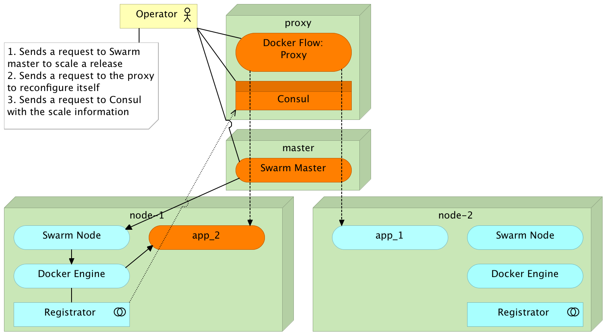Redeployment
Relative Scaling
curl http://swarm-master:8500/v1/kv/go-demo/scale?raw
CURRENT_SCALE=$(curl http://swarm-master:8500/v1/kv/go-demo/scale?raw)
NEW_SCALE=$(($CURRENT_SCALE + 1))
docker-compose scale app=$NEW_SCALE
docker-compose ps
curl "localhost:8081/v1/docker-flow-proxy/reconfigure?serviceName=go-demo&servicePath=/demo" \
| jq '.'
curl -XPUT -d $NEW_SCALE http://swarm-master:8500/v1/kv/go-demo/scale
curl -i localhost/demo/helloRedeployment
Relative Scaling
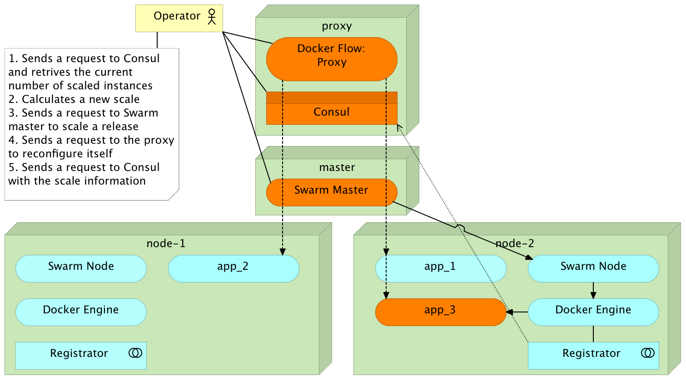Redeployment
Relative De-scaling
CURRENT_SCALE=$(curl http://swarm-master:8500/v1/kv/go-demo/scale?raw)
NEW_SCALE=$(($CURRENT_SCALE - 1))
docker-compose scale app=$NEW_SCALE
docker-compose ps
curl "localhost:8081/v1/docker-flow-proxy/reconfigure?serviceName=go-demo&servicePath=/demo" \
| jq '.'
curl -XPUT -d $NEW_SCALE http://swarm-master:8500/v1/kv/go-demo/scale
curl -i localhost/demo/hello
docker-compose downRedeployment
Relative De-scaling
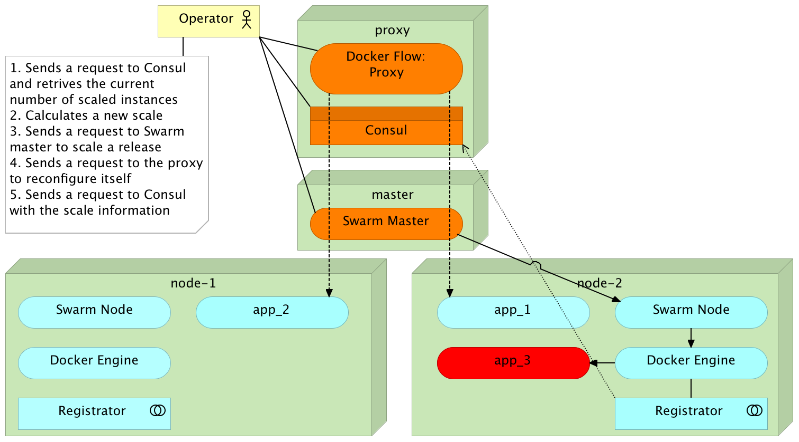Redeployment
Standard Deployment
cat docker-compose-bg.yml
VERSION=:1.0 docker-compose -f docker-compose-bg.yml up -d db app
curl "localhost:8081/v1/docker-flow-proxy/reconfigure?serviceName=go-demo&servicePath=/demo" \
| jq '.'
VERSION=:1.1 docker-compose -f docker-compose-bg.yml up -d db app
curl "localhost:8081/v1/docker-flow-proxy/reconfigure?serviceName=go-demo&servicePath=/demo" \
| jq '.'
docker-compose -f docker-compose-bg.yml down
curl "localhost:8081/v1/docker-flow-proxy/remove?serviceName=go-demo" \
| jq '.'Redeployment
Standard Deployment
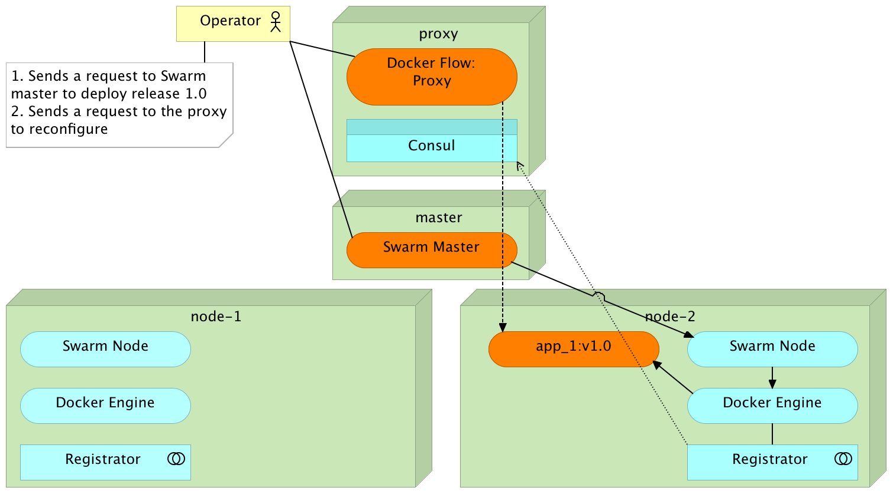Redeployment
Standard Deployment
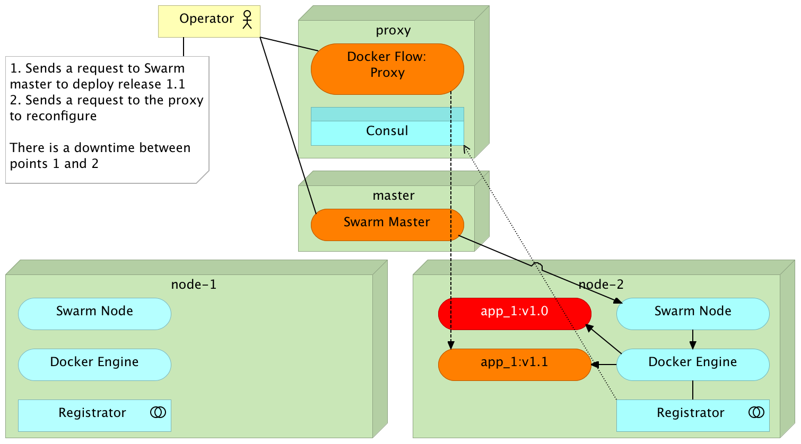Redeployment
Blue-Green Deployment
cat docker-compose-bg.yml
export NEXT_COLOR=blue
VERSION=:1.0 docker-compose -f docker-compose-bg.yml \
up -d db app-${NEXT_COLOR}
curl "localhost:8081/v1/docker-flow-proxy/reconfigure?serviceName=go-demo-${NEXT_COLOR}&servicePath=/demo" \
| jq '.'
curl -i localhost/demo/hello
docker-compose -f docker-compose-bg.yml logs
curl -XPUT -d $NEXT_COLOR \
http://swarm-master:8500/v1/kv/go-demo/colorRedeployment
Blue-Green Deployment

Redeployment
Blue-Green Deployment
COLOR=$(curl http://swarm-master:8500/v1/kv/go-demo/color?raw)
NEXT_COLOR=$(if [[ "$COLOR" == "blue" ]]; then echo "green"
else echo "blue"; fi)
VERSION=:1.1 docker-compose -f docker-compose-bg.yml \
up -d db app-${NEXT_COLOR}
docker-compose -f docker-compose-bg.yml ps
curl -i localhost/demo/hello
docker-compose -f docker-compose-bg.yml logsRedeployment
Blue-Green Deployment
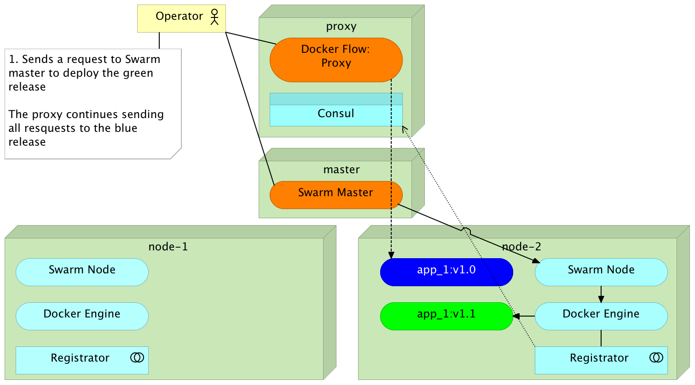Redeployment
Blue-Green Deployment
curl "localhost:8081/v1/docker-flow-proxy/reconfigure?serviceName=go-demo-${NEXT_COLOR}&servicePath=/demo" \
| jq '.'
curl "localhost:8081/v1/docker-flow-proxy/remove?serviceName=go-demo-${COLOR}" \
| jq '.'
curl -XPUT -d $NEXT_COLOR http://swarm-master:8500/v1/kv/go-demo/color
curl -i localhost/demo/hello # Repeat
docker-compose -f docker-compose-bg.yml logs
docker-compose -f docker-compose-bg.yml stop app-${COLOR}
docker-compose -f docker-compose-bg.yml psRedeployment
Blue-Green Deployment

Redeployment
Blue-Green Deployment
docker-compose -f docker-compose-bg.yml down
curl "localhost:8081/v1/docker-flow-proxy/remove?serviceName=go-demo-${NEXT_COLOR}" \
| jq '.'Redeployment
Docker Flow
export FLOW_PROXY_HOST=10.100.198.200
export FLOW_PROXY_RECONF_PORT=8081
export FLOW_CONSUL_ADDRESS=http://10.100.192.200:8500
export FLOW_PROXY_DOCKER_HOST=tcp://10.100.198.200:2375
docker-flow --flow=deploy --flow=proxy --flow=stop-old
docker ps -a --format "table {{.Names}}\t{{.Status}}\t{{.Ports}}"
curl -i localhost/demo/helloRedeployment
Docker Flow

Redeployment
Docker Flow
docker-flow --flow=deploy --flow=proxy --flow=stop-old
docker ps -a --format "table {{.Names}}\t{{.Status}}\t{{.Ports}}"
curl -i localhost/demo/helloRedeployment
Docker Flow

Redeployment
Docker Flow
docker-flow --scale="+2" --flow=scale --flow=proxy
docker ps -a --format "table {{.Names}}\t{{.Status}}\t{{.Ports}}"
curl -i localhost/demo/hello
docker-flow --scale="-2" --flow=scale --flow=proxy
docker ps -a --format "table {{.Names}}\t{{.Status}}\t{{.Ports}}"Redeployment
Docker Flow
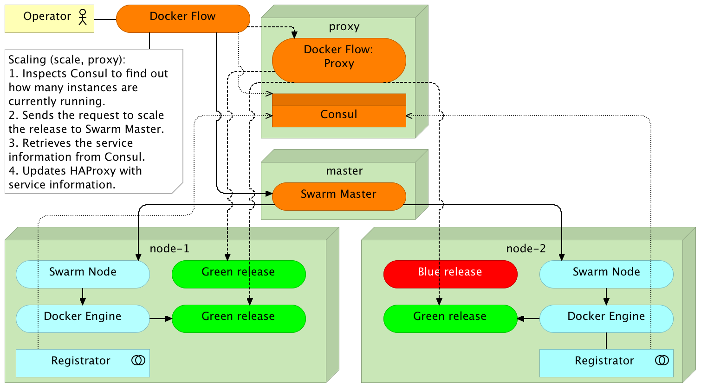Redeployment
Automation With Jenkins
git clone http://10.100.198.200:8080/workflowLibs.git /tmp/workflowLibs
cd /tmp/workflowLibs
git checkout -b master
mkdir vars
cp ~/go-demo/jenkins/vars/dockerFlowWorkshop.groovy \
/tmp/workflowLibs/vars/dockerFlow.groovy
git config --global user.name "vfarcic"
git add --all && git commit -a -m "Docker Flow"
git push --set-upstream origin masterRedeployment
Automation With Jenkins
cd ~/go-demo
cat jenkins/vars/dockerFlowWorkshop.groovy
cat JenkinsfileRedeployment
Automation With Jenkins
http://10.100.198.200:8080 > New Item
Item Name: go-demo; Type: Multibranch Pipeline > OK
Add Source > Git
Project Repository: https://github.com/vfarcic/go-demo.git > Save
Prerequisite #3
Ability to monitor hardware and dynamically adjust cluster capacity (elasticity)
Hardware Health Checks and Watches
Hard Disk Script
df -h
set -- $(df -h | awk '$NF=="/"{print $2" "$3" "$5}')
total=$1
used=$2
used_percent=${3::-1}
printf "Disk Usage: %s/%s (%s%%)\n" $used $total $used_percentHardware Health Checks and Watches
Hard Disk Script
exit
vagrant ssh swarm-master
sudo mkdir -p /data/consul/scriptsHardware Health Checks and Watches
Hard Disk Script
echo '#!/usr/bin/env bash
set -- $(df -h | awk '"'"'$NF=="/"{print $2" "$3" "$5}'"'"')
total=$1
used=$2
used_percent=${3::-1}
printf "Disk Usage: %s/%s (%s%%)\n" $used $total $used_percent
if [ $used_percent -gt 95 ]; then
exit 2
elif [ $used_percent -gt 80 ]; then
exit 1
else
exit 0
fi
' | sudo tee /data/consul/scripts/disk.shHardware Health Checks and Watches
Hard Disk Script
sudo chmod +x /data/consul/scripts/disk.sh
/data/consul/scripts/disk.sh
echo $?Hardware Health Checks and Watches
Hard Disk Check
echo '{
"checks": [
{
"id": "disk",
"name": "Disk utilization",
"notes": "Critical 95% util, warning 80% util",
"script": "/data/consul/scripts/disk.sh",
"interval": "10s"
}
]
}' | sudo tee /data/consul/config/consul_check.json
sudo killall -HUP consulHardware Health Checks and Watches
Hard Disk Check
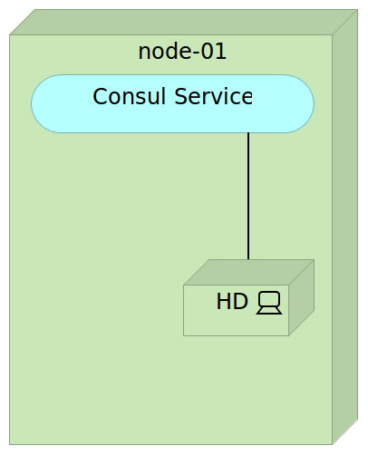http://10.100.192.200:8500/ui/ > Nodes > swarm-master
Hardware Health Checks and Watches
Hard Disk Check
echo '#!/usr/bin/env bash
read -r JSON
STATUS_ARRAY=($(echo "$JSON" | jq -r ".[].Status"))
CHECK_ID_ARRAY=($(echo "$JSON" | jq -r ".[].CheckID"))
LENGTH=${#STATUS_ARRAY[*]}
for (( i=0; i<=$(( $LENGTH -1 )); i++ ))
do
CHECK_ID=${CHECK_ID_ARRAY[$i]}
STATUS=${STATUS_ARRAY[$i]}
echo -e "Triggering Jenkins job http://10.100.198.200:8080/job/hardware-notification/build"
curl -X POST http://10.100.198.200:8080/job/hardware-notification/build \
--data-urlencode json="{\"parameter\": [{\"name\":\"checkId\", \"value\":\"$CHECK_ID\"}, {\"name\":\"status\", \"value\":\"$STATUS\"}]}"
done' | sudo tee /data/consul/scripts/manage_watches.sh
sudo chmod +x /data/consul/scripts/manage_watches.shHardware Health Checks and Watches
Hard Disk Check
echo '{
"watches": [
{
"type": "checks",
"state": "warning",
"handler": "/data/consul/scripts/manage_watches.sh >>/data/consul/logs/watches.log"
}, {
"type": "checks",
"state": "critical",
"handler": "/data/consul/scripts/manage_watches.sh >>/data/consul/logs/watches.log"
}
]
}' | sudo tee /data/consul/config/watches.jsonHardware Health Checks and Watches
Hard Disk Check
sudo sed -i "s/80/2/" /data/consul/scripts/disk.sh
sudo killall -HUP consul
cat /data/consul/logs/watches.log
exitHardware Health Checks and Watches
Cluster Hardware Checks
vagrant ssh cd
export DOCKER_HOST=tcp://swarm-master:2375
cat /vagrant/ansible/swarm-healing.yml
cat /vagrant/ansible/roles/consul-healing/files/mem.sh
ansible-playbook /vagrant/ansible/swarm-healing.yml \
-i /vagrant/ansible/hosts/prod \
--extra-vars "elk_ip=10.100.198.200"Prerequisite #4
Ability to monitor services in (near)real-time and execute reactive actionsReactive Healing
Service Checks
cat /vagrant/ansible/roles/consul-healing/templates/manage_watches.sh
# ansible-playbook /vagrant/ansible/swarm-healing.yml \
# -i /vagrant/ansible/hosts/prod \
# --extra-vars "elk_ip=10.100.198.200"
cd ~/go-demo
cat consul_service.ctmpl
cat consul_check.ctmpl
cat JenkinsfileReactive Healing
Service Checks
docker rm -f $(docker ps -a | grep godemo | awk '{ print $1}')
curl -i http://10.100.198.200/demo/hellocurl -i http://10.100.198.200/demo/helloReactive Healing
Service Checks
sudo docker rm -f docker-flow-proxy
curl -i http://10.100.198.200/demo/hellocurl -i http://10.100.198.200/demo/helloPrerequisite #5
Ability to predict the future and execute proactive actionsProactive Healing
Scheduled Scaling
Build With Parameters > Build
Proactive Healing
Scheduled Descaling
Build With Parameters > Build

Proactive Healing
Proxy Stats
Proactive Healing
ELK Setup
cat /vagrant/ansible/roles/logstash/files/haproxy.conf
ansible-playbook /vagrant/ansible/elk-local.yml \
--extra-vars "logstash_config=haproxy.conf" -c local
sudo docker logs logstashProactive Healing
LogStash API
curl http://10.100.198.200:9200/logstash-*/_search | jq '.'Proactive Healing
LogStash API
curl http://10.100.198.200:9200/logstash-*/_search -d '{
"query": {
"bool": {
"must": { "match": { "tags" : "haproxy_stats" } },
"must": { "match": { "haproxy_stats.svname" : "BACKEND" } },
"must": { "range": { "@timestamp": { "gt" : "now-1h" } } }
}
}
}' | jq '.'Proactive Healing
LogStash API
curl http://10.100.198.200:9200/logstash-*/_search -d '{
"size" : 0,
"query": {
"bool": {
"must": { "match": { "tags" : "haproxy_stats" } },
"must": { "match": { "haproxy_stats.svname" : "BACKEND" } },
"must": { "range": { "@timestamp": { "gt" : "now-1h" } } }
}
},
"aggs" : {
"services" : {
"terms" : { "field" : "haproxy_stats.pxname.raw" },
"aggs": { "avg_rtime": { "avg": { "field": "haproxy_stats.rtime" } } }
}
}
}' | jq '.'Proactive Healing
LogStash API
curl http://10.100.198.200:9200/logstash-*/_search -d '{
"size" : 0,
"query": {
"bool": {
"must": { "match": { "tags" : "haproxy_stats" } },
"must": { "match": { "haproxy_stats.svname" : "BACKEND" } },
"must": { "match": { "haproxy_stats.pxname.raw" : "go-demo-app-be" } },
"must": { "range": { "@timestamp": { "gt" : "now-1h" } } }
}
},
"aggs" : {
"avg_rtime" : {
"avg": { "field": "haproxy_stats.rtime" }
}
}
}' | jq '.'Proactive Healing
Consul / Jenkins
cat /vagrant/ansible/roles/consul-healing/templates/rtime_up.sh
cat /vagrant/ansible/roles/consul-healing/templates/rtime_down.sh
cat /vagrant/ansible/roles/consul-healing/templates/manage_watches.sh
cat consul_check.ctmplProactive Healing
Consul
exit
vagrant ssh swarm-master
sudo sed -i "s/1000 2000/1 2/" /data/consul/config/go-demo_check.json
sudo killall -HUP consul
exit
vagrant ssh cd
curl localhost/demo/hello?delay=2000 # RepeatProactive Healing
Consul
exit
vagrant ssh swarm-master
sudo sed -i "s/1 2/1000 2000/" /data/consul/config/go-demo_check.json
sudo killall -HUP consulViktor Farcic
@vfarcic

TechnologyConversations.com
Viktor Farcic


Cleanup
exit
vagrant destroy -f